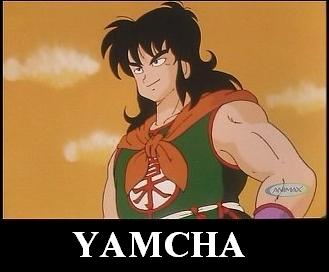

Over
 De: La Frikipedia, la enciclopedia extremadamente seria.
De: La Frikipedia, la enciclopedia extremadamente seria.
Significado del término Over
Over proviene de Overpower, que en los Yanquis viene a significar algo como "Manolo baja un poco el listón porque no hay quien te gane a nada".
Estos personajes por llamarlos de algún modo tienen por razones variadas o desconocidas aptitudes y habilidades que dejan en ridículo son infinitamente superiores a las de los demás, todo el que se enfrenta a ellos acaba mordiendo el polvo de un modo u otro, no importa cuanto lo intentes, si eres normal jamás vencerás a un Over.
Su especie es limitada, generalmente están aplicados al mundo de los videojuegos en lo que suele haber un Over por título. Hay excepciones de la existencia de Overs de carne y hueso también (básicamente los tarados que consiguen record guiness por citar un ejemplo). Como sus habilidades son sobrehumanas despiertan la envidia y el odio de los demás, y el cómo se refieren a ellos depende del punto de vista de los que le rodean, entre las expresiones más comunes destacan:
- Tampoco es para tanto Clara defensa de un controlador de over hacia su personaje chutado
- Bueno vale sí está bastante bien Defensor del Over empieza a ver la realidad
- Es una maquina de matar/Sanar/apoyar Defensor del Over en su máximo estado de alegría, admitiendo los hechos
- Jodido cerdo Victimas de un Over joven
- Con esto no se puede hacer nada Víctimas de un Over adolescente
- ¡Que nerfeen esto ya! (acompañado con gritos de desesperación) Victimas de un Over maduro y poderoso
Características de un Over
Todo Over que se precie debe cumplir todas estas condiciones para ser considerado como tal:
- Parámetros: superior a lo normal
- Creadores: depende de la subespecie
- Edades: joven, adolescente y perfecto
- Habilidades: hacen de todo
- Géneros: hombres, mujeres y Wombats
- Lema: Yo solo/a me basto
- Esperanza de vida: muchos no mueren ni de viejos
- Hábitat: en todas partes
- Formatos: Todos
- Nacer Over: tus padres deben haberlo sido
- Convertirse en Over: Invicto desde tu nacimiento
- Puntuación cualquier prueba: debe ser máxima SIEMPRE
 sí, Yamcha ha visto muchos Overs en su vida y ha sobrevivido hasta ahora
Overs en el mundo de los humanos
Naturalmente existen Overs de carne y hueso, poseen habilidades innatas que el 98% de la población humana envidia no entiende, la inmensa mayoría les teme, entre ellos destacamos:
- MacGyver: Otro Over del que estamos enteramente orgullosos, es el único ser en todo el universo capaz de fabricar una bomba de 10 kilotones usando como materia prima agua de mar, un pasador, restos de una lata de atún oxidada, un clip, algo de chicle y un disco de instalación de windows vista, por si no fuera poco puede ser cualquiera (ver el artículo de MacGyver para más información).
- Gregory House: El Over de la medicina, todos hemos visto como el Dr House descubre enfermedades en tiempo récord (normalmente oscila entre 2 y 4 nanosegundos) a la vez que encuentra la cura para la misma, insulta constantemente a sus pacientes y éstos no responden por miedo a su cólera inagotable. Tiene una pierna destrozada por un combate que tuvo con Goku (recordemos que sólo un Over puede herir a otro Over).
- Kofi Annan: Over de tipo buena persona, llegó a tal punto de perfección que era capaz de confundir a sus enemigos usando a un doble idéntico a él. Con el tiempo ascendió en la escala de Overs hasta hacerse con el poder de la ONU lo que lo convirtió en un ser divino para toda la eternidad capaz de viajar en el tiempo.
- Paris Hilton:
El Over Zorrón El Over femenino más famoso del mundo, entre sus habilidades más destacadas se encuentra su inteligencia superior, se le ofreció un puesto en la NASA pero lo rechazó argumentando que sus retos iban más allá que la exploración del espacio, ella centraba sus esfuerzos en el estudio de la anatomía genital masculina.
- Leticia Sabater: La única Over que ha logrado cambiar su sexo en varias ocasiones, nació hombre pasó por estado Wombat (para infiltrarse y conocer mejor al enemigo) y decidió en su madurez mutar a un Over mujer pues era la forma que más ventajas le proporcionaba en su carrera al estrellato, empezando por dominar las mentes de los jóvenes de España que más tarde se extendería como una plaga por todo el mundo, si dominaba a los niños el futuro sería suyo y casi lo consigue. A ciencia cierta se desconoce si está viva o muerta
aunque todos sabemos que no, un Over de tal calibre no puede morir.
Overs en el mundo de los videojuegos
Hay un tipo de Overs llamados virtuales, son virulentos y muy peligrosos, algunos de ellos cambian de forma con facilidad gracias a un ente que les envia su creador llamado parche con el que mejoran y cambian sus habilidades. Muchos de ellos tienen miles de admiradores alrededor del globo, algunos Overs virtuales han superado el prestigio que ostentan muchos Overs humanos, entre ellos podemos encontrar casos como los siguientes:
- Sephiroth: Es un tipo de Over digital malo maloso de los videojuegos creado a partir de células de una extraterrestre llamada Jénova, es muy rarito, apenas habla pero se ganó el mote de mejor SOLDADO de la tierra ( en realidad le molestaba que le llamaran así, por eso ensarta a la gente con su zampakuto liberada de 300 metros y medio) Vive obsesionado con dominar el mundo invocando piedras gigantes y busca sin cesar a su madre, cualquiera que se interpone en su camino será eliminado (menos su alter ego Cloud gomina de cemento que ya lo ha matado 2 veces, pero Sephiroth es un Over...el nunca será un recuerdo).
- Onilink: Es un tipo de Over bueno buenoso de los videojuegos creado a partir de los restos de una máscara de un antiguo dios al que llamaban la Fiera Deidad, podríamos decir que es la forma perfecta de Link, en este estado es tan Over que corta a los enemigos a distancia y la magia se le agotará el 29 de Julio del año 2734, por si fuera poco es capaz de viajar a través del tiempo y cambiar las estaciones a su antojo entre otras muchas cosas inimaginables.
- Caballero de la muerte: Este singular personaje del World of Warcraft es conocido por nada más y nada menos que 13000000 de suscriptores, unos lo adoran, otros lo odian. Pero son INFINITA mayoría los que los aman (si no puedes con ellos únete), entre sus habilidades podemos destacar lo siguiente: tiene la armadura más fuerte, tiene escudos antimagia, invoca un ejercito de subordinados, golpea con una fuerza brutal, puede curar sus heridas sin parar de atacar y es el personaje con mas vida con diferencia. En el WoW TODOS se arrodillan ante él, sin excepción.
Autor(es):
- Rundas
- Prototype
- Kirillov
- Jochu87
- Axelaxel12
- El alvaro
Frikipedia 2005-2016, Licencia
GFDL 1.2 - Extraído por FrikiLeaks